来源：https://lw0qdvkpi9l.feishu.cn/docx/JFUcdPn5tostdXxcIcMcTxu5ned
嗨，各位小伙伴们！
先介绍一下自己，我是虎哥，目前是一个世界 500 强前端架构师，AI 智能体工程师，破局行动家，AI 写真教练，天天打交道的就是编程，而且 IDE（程序员编程用的工具）也从 vscode 变成了 cursor，编程效率直接起飞，基本上编程插件、编程 IDE 都玩了一遍，有比较深的理解。
今天接着讲 AI 编程，不知道前两篇大家学得怎么样了？
是比较基础的两篇内容，没有特别难懂的技术，当然对于已经是程序员的小伙伴这都不算什么，但是对于小白还是需要知道的。
AI 编程这个东西实操动手能力比较强，如果只停留在理论上面，你大概率是学不好编程的。
光说不练假把式，来吧，今天带大家完成一个 2048 小游戏，先看一下效果咋样
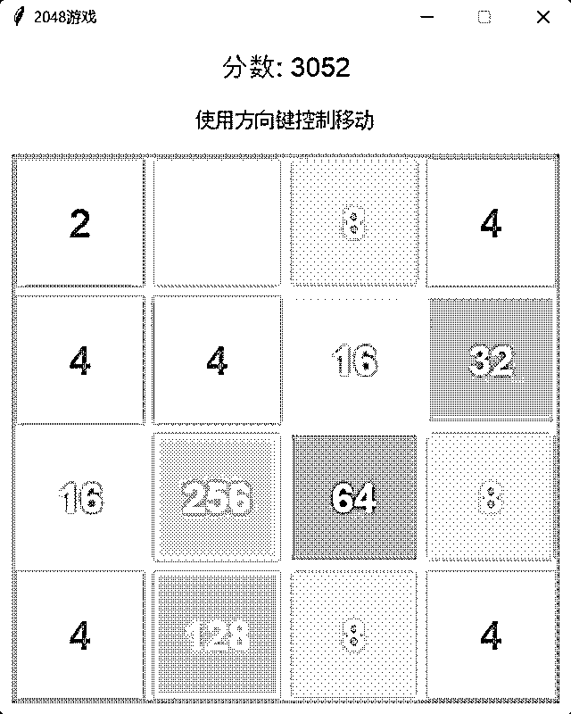
学完本篇内容，你也可以做出同样的小游戏，跟着来.....
首先拆解一下需求，什么是 2048 小游戏？
简单来说玩家通过键盘输入方向键来控制游戏，目标是将相同数字的方块合并，最终得到一个 2048 的方块。
首先我们需要生成一个游戏需求文档，不知道怎么写也没关系，打开我们的老朋友 kimi
传送门：https://kimi.moonshot.cn/
告诉它我们需要制作一个 2048 的小游戏，然后让它整理出一个需求文档，并且说明用 python 来制作
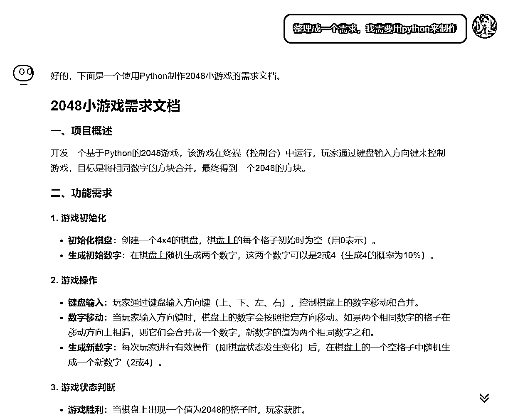
下面是整理好的 2048 文档，包含项目描述、功能需求说明、界面要求这几块，详细的描述了怎么去制作用什么技术怎么去展示等等
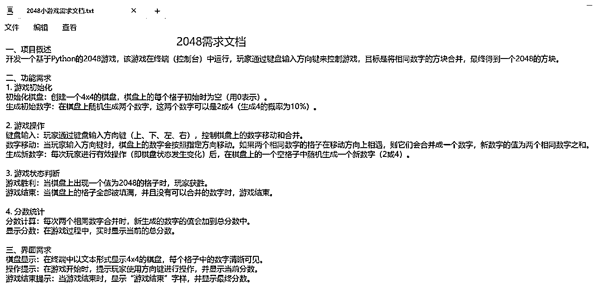
所有资料我都放到网盘里面了，有需要的小伙伴点击下方链接自取
0117-2048 小游戏
https://drive.uc.cn/s/113511301d724
密码：P86R
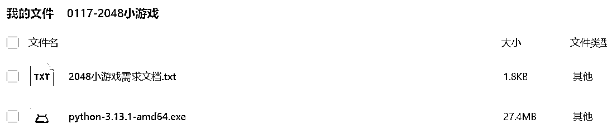
在实操之前先讲一下今天的两个知识点，也是后面我们常用的两个快捷键，这里以 windows 为例
这里我以 D 盘为例，在下面建一个 CursorCase 文件夹，然后是今天的 2048 小游戏文件夹
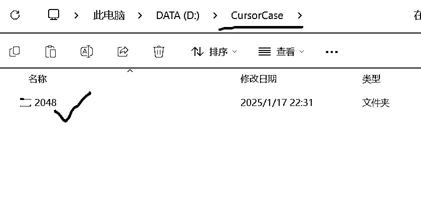
打开刚才创建的文件夹，点击左上角文件--》打开文件夹或者直接按快捷键 Ctrl+M+O
然后直接按快捷键 Ctrl+I，会在右侧打开 Composer 窗口，功能说明刚才已经说了，然后复制需求文档粘贴到输入框进行生成代码，输入完直接点右下角“submit”或者回车都可以
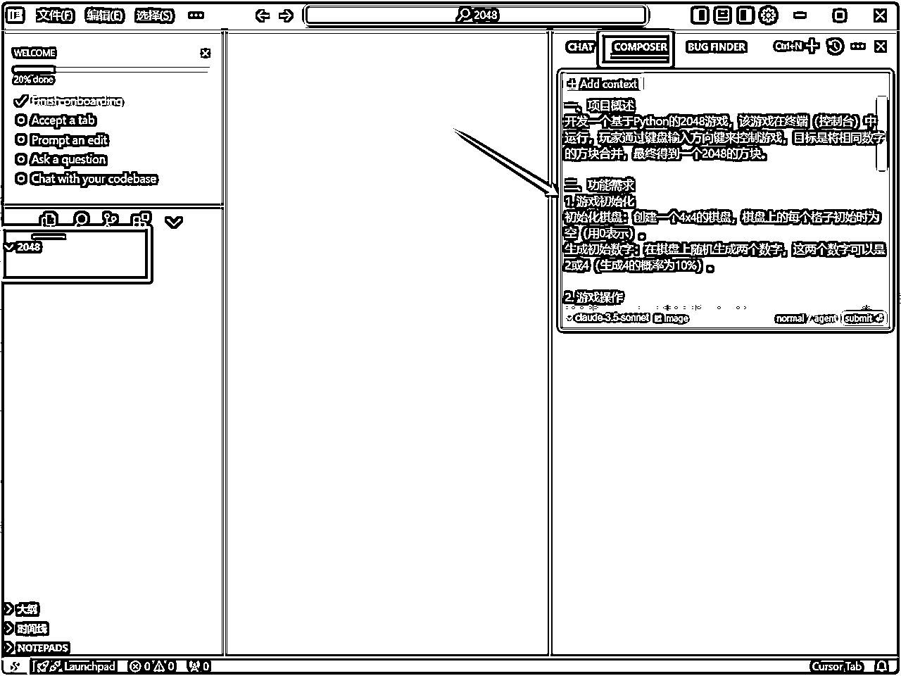
接下来 cursor 就会根据我们的需求文档进行代码生成，生成好代码如下图
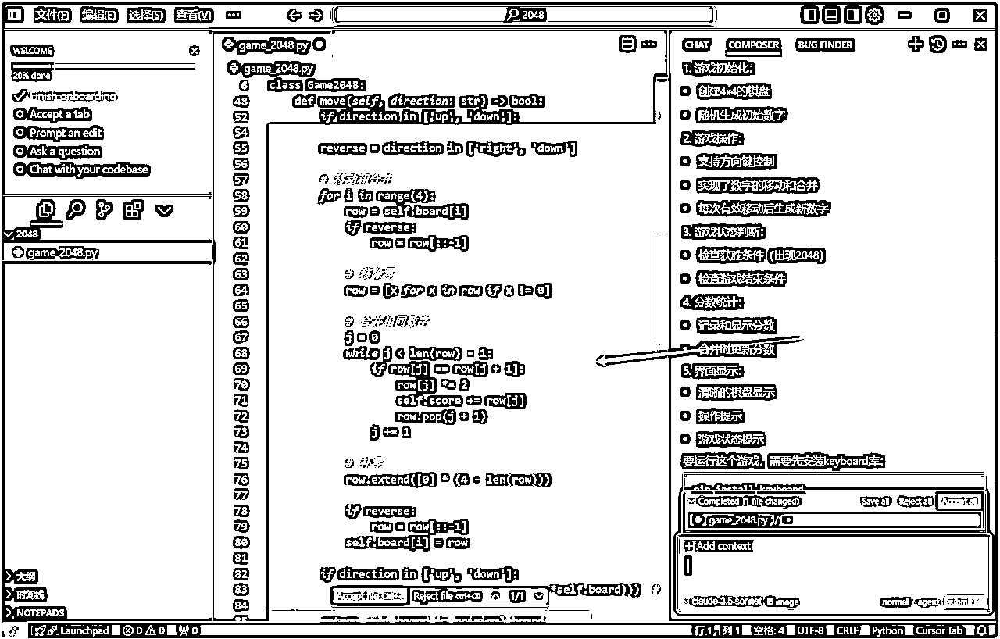
是不是看不懂？看不懂也没有关系，直接点右下角的蓝色按钮“Accept all”接受所有代码
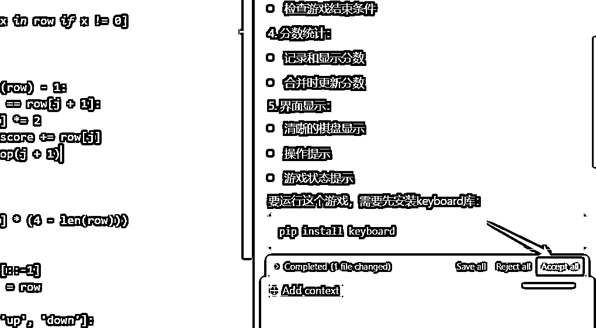
这个时候看一下窗口里面的描述，它让我们先安装 keyboard 库，鼠标浮动到代码框上，然后直接点击“Run”按钮
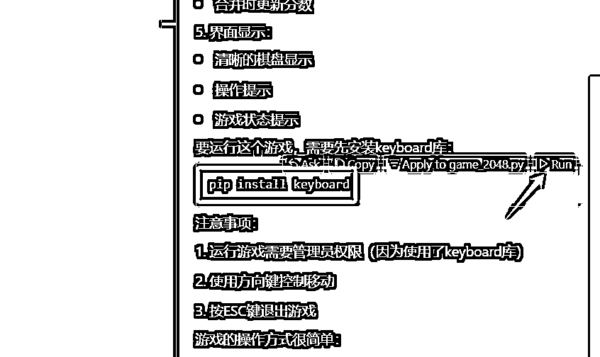
哎，是不是在终端窗口看到一片红色的文字，没错程序报错了，运行不了，那怎么办呢？
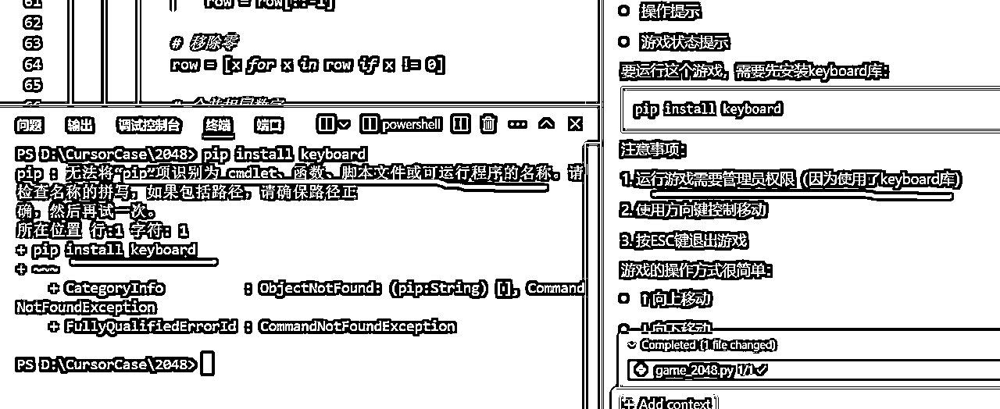
没关系，别被吓到了，将错误信息全选中，然后点击右边的“Add to Chat”打开我们的对话框，当然你也可以按快捷键 Ctrl+L
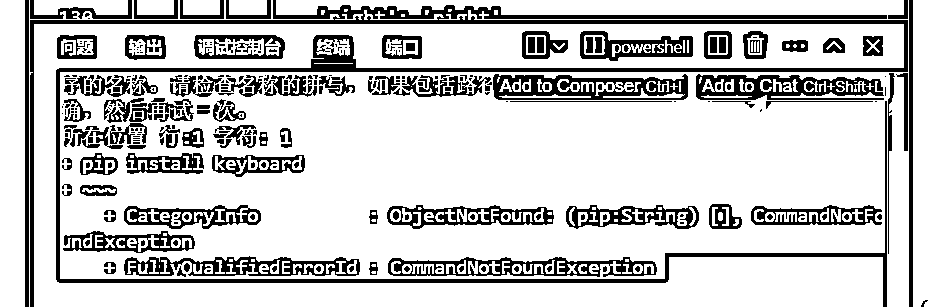
在 chat 窗口中，我们直接输入“这个错误我该如何修复？”，然后就会告诉你一堆操作
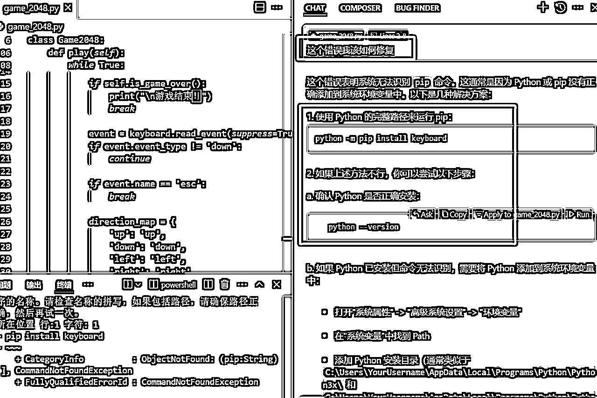
其中有一项是让我们检查是否安装了 python，这里我们可以按照它所给的提示进行 python 检查，还是一样点击“Run”按钮，在终端窗口中会有提示信息，用同样的方法问它怎么修复，得到一个结果没有正确安装 python，如下图：
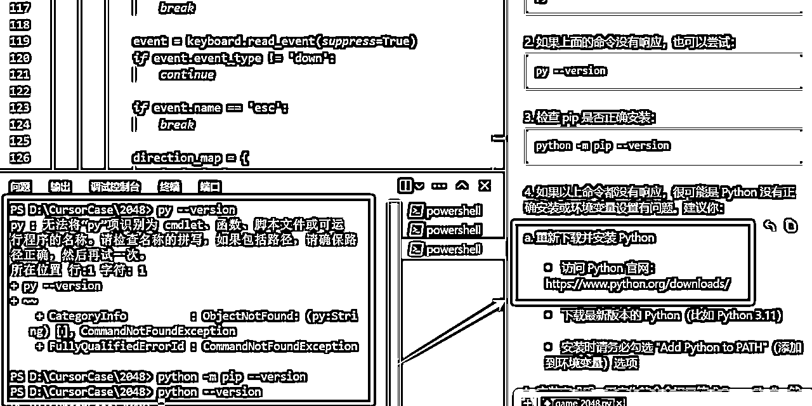
按照 cursor 所给的地址，先复制下来然后打开 python 官网下载安装文件
python 安装包下载：https://www.python.org/downloads
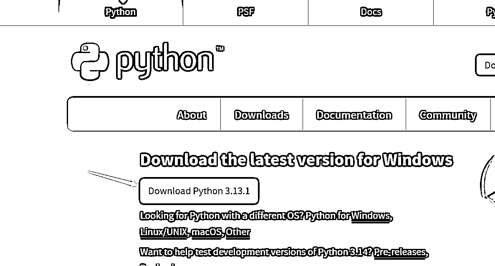
如果大家打不开这个网站，也可以点击下方链接领取，我已经打包好了
0117-2048 小游戏
https://drive.uc.cn/s/113511301d724
密码：P86R
下载完点击 exe 文件进行安装，安装的时候需要勾选上“Add python.exe to PATH”这里需要添加一个环境变量，然后点击“install Now”
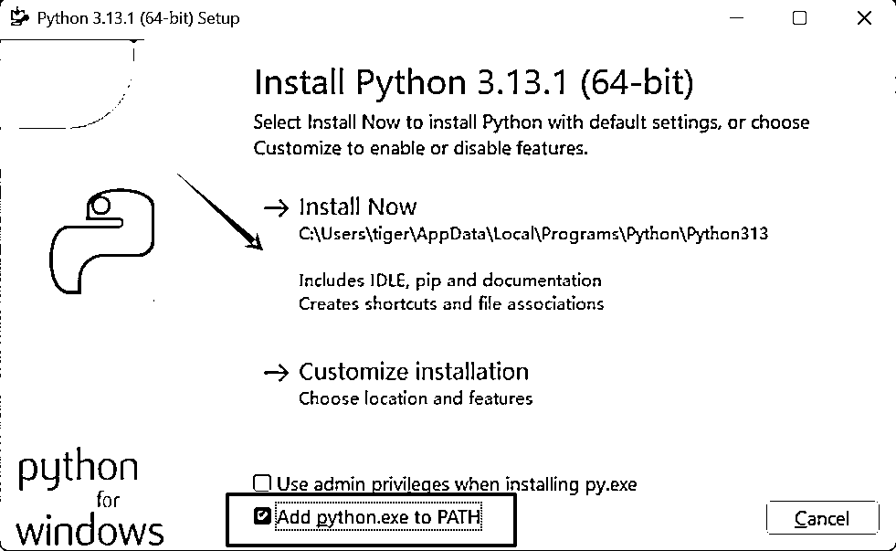
如何检查是否安装好呢？
回到 cursor 页面，然后关闭 cursor，重启一下程序！！！
在终端下面输入“python --version”看到下面的版本号则为成功！
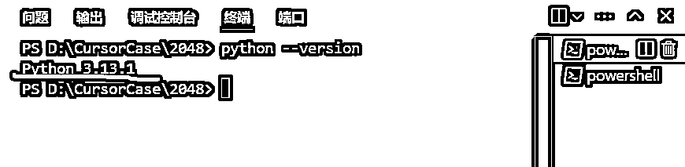
然后继续输入“python -m pip install keyboard”进行安装
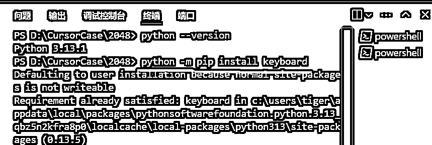
接着就是激动人心的时刻了，忙活了半天总得让我看到一点希望吧，运行我们的程序，输入“python game_2048.py”
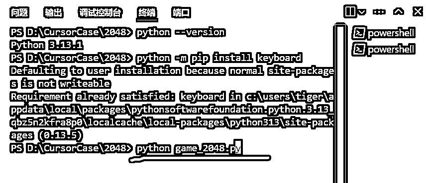
这里需要注意一下，game_2048.py 是 cursor 帮我们创建的文件名，如果给你创建的不是这个，请改成对应的文件名即可
然后我们就可以在终端看到一个 2048 的游戏格子，可以用键盘上的方向键进行操作，体验了一把还不错，想退出就直接按“ESC”
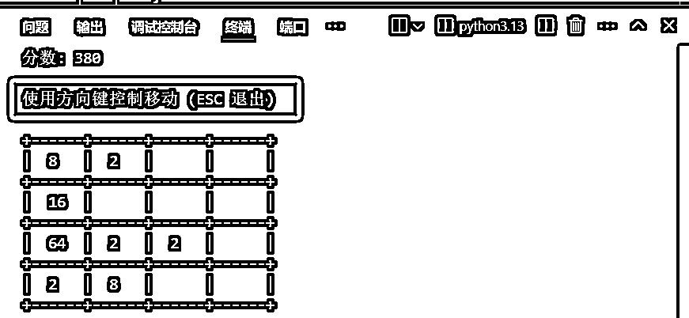
直接在终端玩多别扭啊，能不能做得好看一点？
没问题，按“ctrl+i”打开 Composer 窗口，输入对应的提示词，让它帮我们做好看一点，并且运行的时候新开一个窗口，如下：
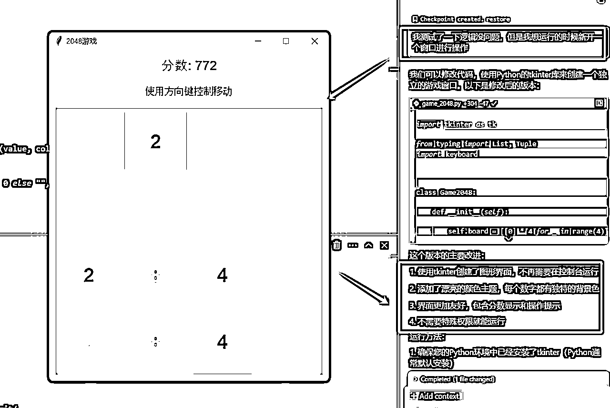
整个制作过程就完成了，撒花，结束～
小伙伴们学会了吗？
整个过程没有太复杂的操作，如果你熟练以后也就是几分钟就搞定了，做好了之后也可以让它帮你打个包，做成安装包程序，分享给你的小伙伴一起玩。
有没有感觉编程也挺有乐趣的，在 AI 盛行下一切都变得简单了，所以说呢你还觉得 AI 没啥用吗？
好了，今天就讲到这里。大家有啥疑问可以留言